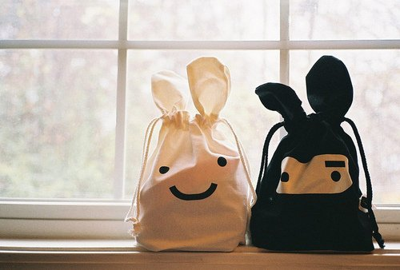

2016.03
得失无语，弃风获雨
得失无语，弃风获雨，不以物喜，不以己悲，不图虚名，不慕奢华，
高兴享受生命每一天，放弃风，你将收获雨。
在日复一日年复一年的光阴里，
让心满满的拥有一份平静和一份淡泊，让自己慢慢享受生命中的快乐忧伤和幸福，
然后，悄然回想生命中经历的那些美好和曾经感悟过的往昔，
在细细品味和思索中深深浅浅的感动自己。
岁月，请温柔以待
岁月，淡去，留下依稀的摸样，你却清晰如初。
时光如雨，我们都是在雨中行走的人，找到属于自己的伞，朝前走，
一直走到风停雨住，美好明天。陆小曼，娓娓道来。
又是一季秋，又是一季秋尾，秋风萧条，秋雨冷凉，秋虫呢喃。
为美好的生活而静守流年
一曲流水无殇，花落无影，逝不去心中烟雨三生； 百年明月依旧，山水轮回，留不住千里风清云淡。
得失无语--------
40%温柔以待--------
30%静守流年--------
30%
YOU
学会珍惜现在
LEARN TO
CHERISH NOW
漫无边际
放开胸怀迎接未来
我
就像现在一样看着你微笑,沉默,得意,失落,于是我跟着你开心也跟着你难过,
只是我一直站在现在而 你却永远停留过去.
名称上有很明显的时代特征.我们拥有一只鞋子的时候，
才会明白失去另一只鞋子的滋味，失去的东西总是最好的，
消逝的恋情总是刻骨铭心的，珍惜或放下，都是生命中必经的过程。
做好自己的本分，不要为了讨好别人改变自己，当然，也不要为了某些因素，固执不通

我忘记了哪年哪月的哪一天
我在哪面墙上刻下了一张脸，一张微笑着，忧伤着，
凝望着我的脸 那些 刻在椅背后的爱情，会不会像水泥地上的花朵，开出地老天荒的，没有风的森林
遗忘 是我们不可更改的宿命所有的一切都像是没有对齐的图纸 从前的一切回不到过去 就这样慢慢延伸 一点一点的错开来。
也许 错开了的东西 我们真的应该遗忘了。不是每一次努力都会有收获，但是，
每一次收获都必须努力，这是一个不公平的不可逆转的命题 。
茫茫人海可以找到一个心爱的人，这是多么大的福气，或许没有你想象那么好，应该也不会糟糕到哪里，
所以知福惜福好好珍惜，多说关怀话，少说责备话。如果你懂得珍惜，你会发现你获得的越来越多，如果你一味追求，你会发现你失去的越来越快。一个人绝望的时候，
就需要一种发泄方式，但面对人生有些事情，并不是我们付出努力就可以把握的，
有些人并不是我们真诚面对就可以换取真心的，有些事情不是经过努力就可以挽回的。
▲ 生活，就应当努力使之美好起来。............托尔斯泰
▲ 乌云后面依然是灿烂的晴天。.................朗弗罗
▲ 凡笑者，就表现着他尚有生活的胆和力。.......德懋庸
0
YOU ME
HELLO GIRL BOY
Victory won't come to us, I must own to victory
“
A thousand-li journey is started, the first step.
This is to encourage you
”